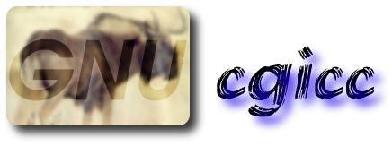

Main Page Namespace List Class Hierarchy Alphabetical List Compound List File List Namespace Members Compound Members File Members Related Pages

GNU cgicc - A C++ class library for writing CGI applications
Copyright © 1996, 1997, 1998, 1999, 2000, 2001, 2002 Stephen F. Booth
This documentation covers GNU cgicc version 3.2
Introduction
GNU cgicc is an ANSI C++ compliant class library that greatly simplifies the creation of CGI applications for the World Wide Web. cgicc performs the following functions:
- Parses both GET and POST form data transparently.
- Provides string, integer, floating-point and single- and multiple-choice retrieval methods for form data.
- Provides methods for saving and restoring CGI environments to aid in application debugging.
- Provides full on-the-fly HTML generation capabilities, with support for cookies.
- Supports HTTP file upload.
- Compatible with FastCGI.
Documentation
This documentation is divided into several parts:
Background Information
Library Background
- Library Overview presents an overview of the library architecture, with an introduction to the libraries' classes
Programmer's Reference
Sample Code
- A Tutorial Example is written for programmers familiar with CGI programming, but unfamiliar with GNU cgicc
- GNU cgicc Demos are more complex, functional demos illustrating specific features of the library
Other Resources
- Software Licenses ensure your rights to copy and distribute the GNU cgicc library, the associated documentation, and the included examples
- Mailing Lists are available to discuss cgicc, report bugs, and receive information on new releases
- Reporting Bugs outlines the reporting process if you think you've found a bug in cgicc
GNU cgicc - A C++ class library for writing CGI applications
Copyright © 1996, 1997, 1998, 1999, 2000, 2001, 2002
Stephen F. Booth
Permission is granted to copy, distribute and/or modify this document
under the terms of the GNU Free Documentation License, Version 1.1 or
any later version published by the Free Software Foundation; with no
Invariant Sections, with no Front Cover Texts, and with no Back-Cover
Texts.
Documentation generated Wed Jan 9 12:31:26 2002 for cgicc by
doxygen 1.2.13.1